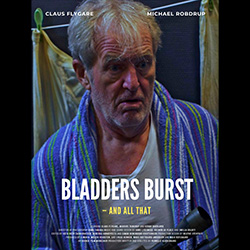
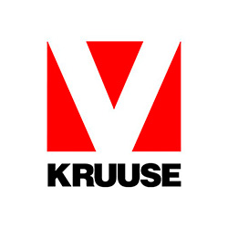
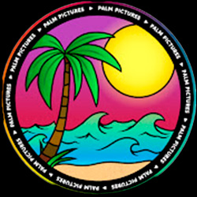
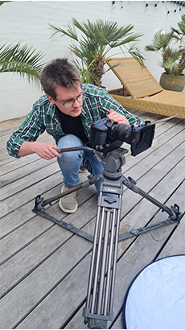
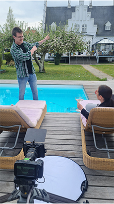
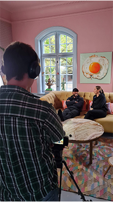
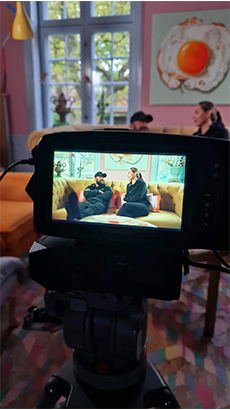

Jeg er i øjeblikket i gang med at uddanne mig som multimediedesigner, og jeg er motiveret for at fortsætte min uddannelse og opnå en bachelor indenfor konceptudvikling. Min passion for film og video har altid været dyb, og den er kun vokset med årene. Jeg ser filmproduktion som et fascinerende maskineri, der kræver et talentfuldt og mangfoldigt hold af mennesker med forskellige ekspertiser. Jeg elsker alle aspekter af filmproduktionen. Jeg har eksperimenteret med ideudvikling, manuskript-skrivning, instruktion, skuespil, lydoptagelser, lys-teknikker, fotografering, klipning og meget mere. Jeg har flair og interesse for alle disse områder, men klipning er uden tvivl det område, hvor jeg skiller mig ud. Som klipper føler jeg mig i stand til at bidrage på alle niveauer af filmproduktionen, og det er dér, jeg finder den bedste mulighed for at udfolde min kreativitet.
En stor del af min familie arbejder inden for marketing, og det har naturligt skabt en interesse hos mig. Jeg ønsker at vende synsvinklerne i reklamebranchen og skabe noget nyt og inspirerende. I stedet for blot at fortælle folk, at de skal købe et produkt, vil jeg vække deres lyst til produktet, underholde brugerne og skabe noget, som de aldrig vil glemme.
Jeg stræber efter et erhverv hvor jeg kan kombinere mine to passioner inden for marketing og videoproduktion.
Hvis du søger en frisk og energisk ung mand med 15 års erfaring, er du kommet til det rette sted. Jeg er klar til at bringe min entusiasme og dedikation ind i ethvert projekt.
Erfaring
Min lidenskab for video har ført til et omfattende CV. Jeg har ikke kun opnået erfaring gennem uddannelse, men også gennem mine hobbyer og fritidsjobs.
Erfaring fra uddannelsen
Erfaring udenfor uddannelsen
-

Kortfilm
Jeg har arbejdet på en kortfilm, kaldet Blæren kan springe - og alt muligt. Her fungerede jeg som editor, color grader og DIT. Jeg har igennem denne process fået erfaringen omkring hvordan man arbejder på en ægte produktion.
-

KRUUSE
I øjeblikket er jeg ansat på deltid hos KRUUSE, hvor jeg alene står for virksomhedes video produktion. Mit arbejde indebærer at reklamere for deres dyreartikler.
-
Egen Youtube
Når jeg har alenetid, hygger jeg mig med min egen YouTube kanal, hvor jeg fortæller og lærer mig selv nye filmteknikker. I videoerne eksperimenterer jeg med kamerastyring samt klipning.
-

Fælles Youtube
I min fritid arbejder jeg frivilligt med optagelser af musikvideoer med en vennegruppe, som hedder Palm Pictures og har blandt andet skudt musikvideoer sammen med Mark Johnson og hans lærling Celine.
Bag om optagelserne på Iskold med Celine feat. Johnson
- 
- 
- 
- 